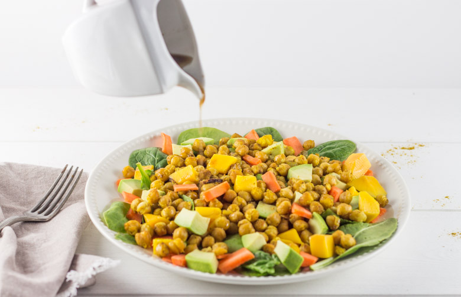

Salade de pois chiches végétarienne

Aujourd’hui c’est avec une recette de salade que je vous retrouve car je ne sais pas chez vous mais ici il fait grand soleil dernièrement alors cette salade de pois chiches était la bienvenue! Qui n’a pas dernièrement entendu quelqu’un lui répétait en boucle « en avril ne te découvre pas d’un fil » (moi je l’entends tous les jours^^). Car oui le soleil est bien présent en ce moment (pitié ne t’en va pas!!!) et je n’ai qu’une envie c’est de ressortir les vêtements d’été, manger des fraises et des glaces, partir à la plage tongs aux pieds et crème solaire dans le sac. Bon comme tous les ans je suis bien obligée de me raisonner et de me dire qu’il va falloir attendre encore un petit peu (un peu beaucoup même). En attendant, je ne me « découvre » pas (un peu quand même) et je me console en préparant de délicieuses salades surtout que je sais pertinemment que d’ici peu se sera pluie, bottes et grisaille à nouveau! Je vous propose alors une recette de salades de pois chiches « rôtis » pleine de couleurs et qui devraient ravir les végétariens. Comme vous vous en doutez je ne suis pas végétarienne même si je mange peu de viandes et pas beaucoup de poissons non plus mais des personnes dans mon entourage sont végétariennes à 100% alors voilà une idée de recettes qui pourraient leur plaire :). Cette salade de pois chiches est assez « light » également! Parfait pour espérer rentrer dans un maillot de bain cet été 😉 😀 🙂 Pour cette recette, j’ai décidé de rôtir les pois chiches en les laissant préalablement quelque temps mariner dans de l’huile d’olive, du curry et des échalotes et rien que l’odeur qui se dégageait du four nous a terriblement donné envie. Vous devriez faire perdurer le beau temps avec cette assiette et je vous laisse découvrir la recette.
Ingrédients
- Pois chiches égouttés - 400g
- Mangue - 1
- Avocat - 1
- Carottes - 2
- Pousse d'épinards - 1 poignée par personne
- Curry - 1 bonne cuillère à soupe
- Echalote - 1
- Huile d'olive
- Tabasco - qq gouttes
- Huile de sésame - 25ml
- Vinaigre balsamique - 12.5 ml
- Miel - 1 càc
- Moutarde en grains - 1/2 càc
- Poivre - 1 tour de moulin
Instructions
- Égoutter les pois chiches
- Préchauffer le four à 200°
- Couper l'échalote en fines rondelles
- Dans un bol, faire mariner les pois chiches dans de l'huile d'olive, du curry, quelques gouttes de tabasco (selon si vous aimez manger épicé ou non) et l'échalote (15 minutes)
- Étalez-les sur une plaque de cuisson afin qu'ils ne soient pas superposés les uns sur les autres
- Enfourner pour 25 minutes à 200°en surveillant la cuisson Les pois chiches vont devenir plus foncés mais il ne faut qu'ils deviennent durs
- Pendant ce temps, couper l'avocat et la mangue en dés
- Couper la carottes en julienne (moi j'ai fait de larges morceaux de carottes)
- A la sortie du four, laisser refroidir les pois chiches
- Pendant, ce temps préparer votre vinaigrette Verser l'huile dans un récipient, ajouter le vinaigre et mélanger Ajouter le miel et la moutarde et mélanger à nouveau Donner un tour de moulin à poivre et c'est prêt!
- Disposer les ingrédients dans l'assiette en commençant par les pousses d'épinards, puis quelques morceaux de mangue, d'avocat et de carotte Ajouter les pois chiches et le reste de légumes/fruit
- Arroser de vinaigrette et déguster!

Les tips de la communauté
Salade végétarienne très appréciée pour son originalité et ses saveurs bien équilibrées. Plusieurs testeurs ont noté l'excellent mariage sucré-salé de la vinaigrette avec miel. Recette de saison bien reçue et riche en présentation colorée.
Astuces
- Vinaigrette avec miel crée un excellent équilibre sucré-salé
- Pois chiches apportent la richesse protéinée et texture
- Salade riche et consistante, excellente comme plat complet
Variantes suggérées
- Mangue peut être remplacée par autre fruit ou légume saisonnier
- Huile de sésame peut être remplacée par mélange d'huiles bio